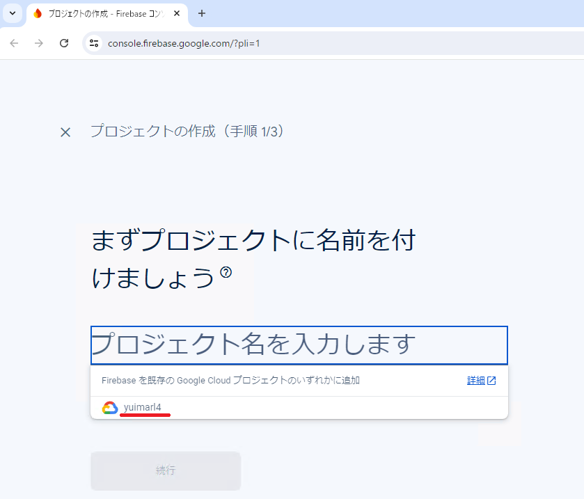
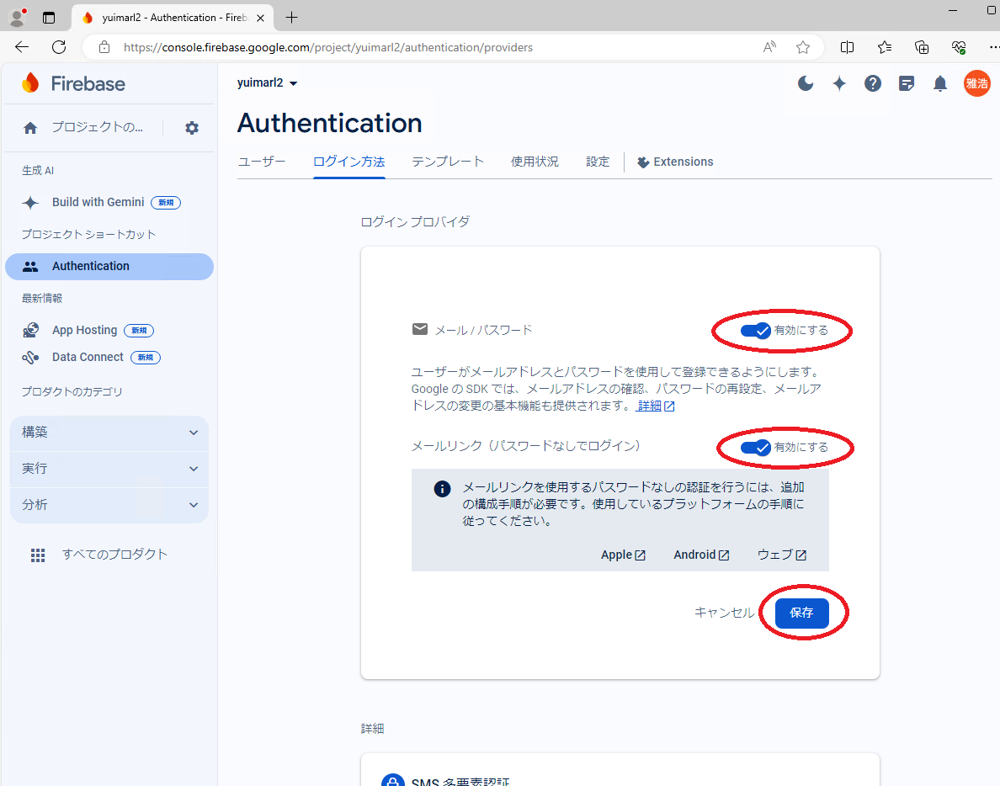
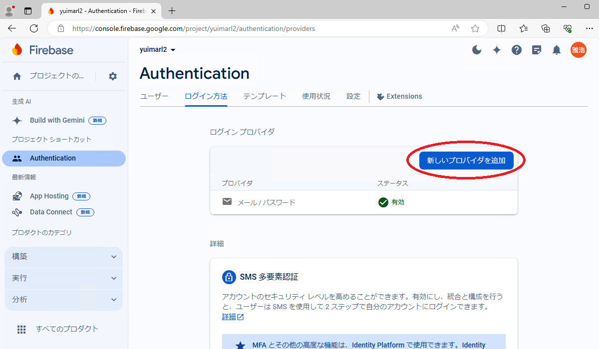
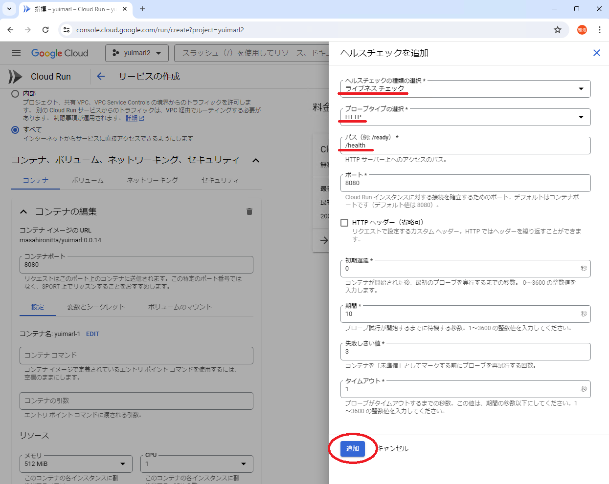
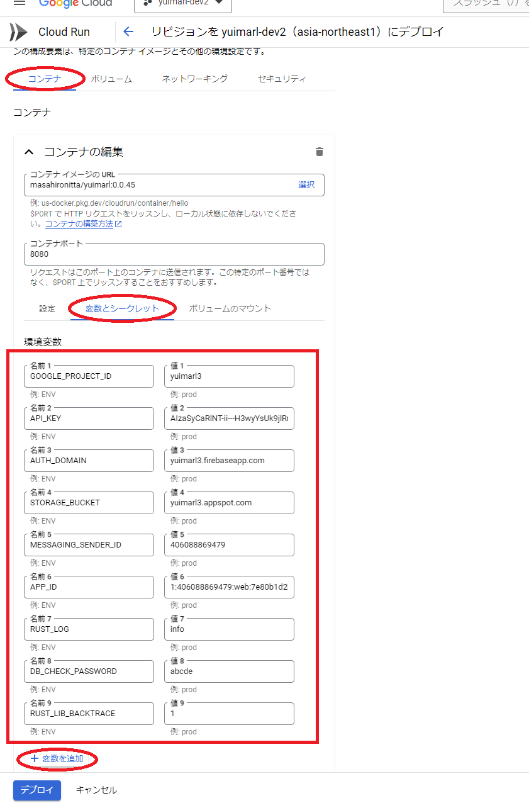
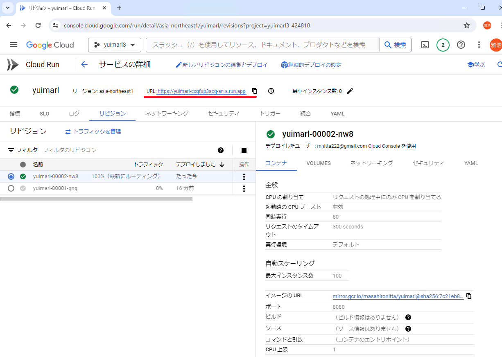
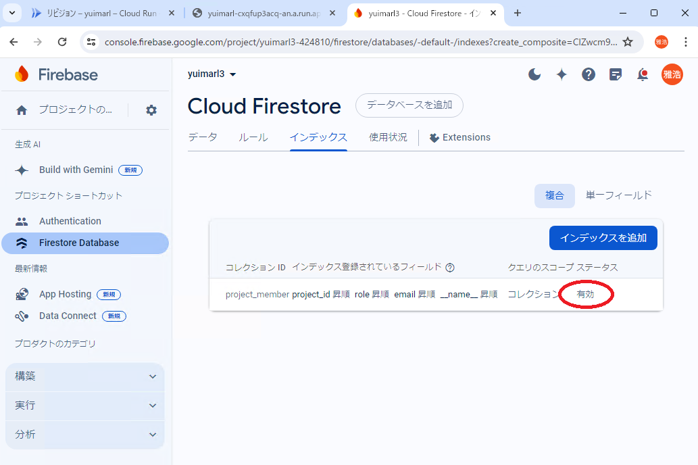
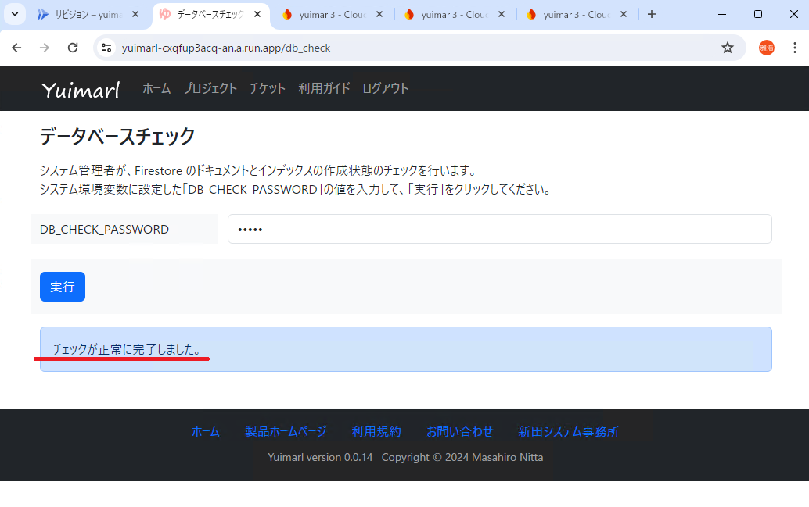

運用環境構築
Yuimarlの運用環境は、以下の手順でセットアップを行います。
Google Cloud プロジェクトを作成する
Google アカウントをお持ちでない場合は、取得してください。
gcloud CLI をインストールしてください。
次のコマンドで、Yuimarl 用の Google Cloud プロジェクトを作成してください。（<project-id>の箇所は、作成するプロジェクトのID）
gcloud projects create <project-id>プロジェクトを作成したら、次のコマンドを実行してください。
gcloud config set project <project-id>gcloud auth application-default login
Firebase プロジェクトを作成する
Firebase コンソールで「プロジェクトを作成」をクリックします。
{kind=link}
プロジェクトの名前を入力して「続行」をクリックします。（上記で作成したプロジェクトがリストに表示されるので、それを選択してください。）
{kind=link}
{kind=link}
「Firebaseを追加」をクリックします。
「続行」をクリックします。
Firebase プロジェクト画面の左側のメニューで「構築」をクリックして展開します。
「構築」の中の「Authentication」をクリックします。
「Authentication」の「始める」をクリックします。
{kind=link}
「ログイン方法」の「メール / パスワード」をクリックします。
「メール / パスワード」と「メールリンク（パスワードなしでログイン）」を「有効にする」にして「保存」をクリックします。
{kind=link}
「新しいプロバイダを追加」をクリックします。
{kind=link}
「Google」をクリックします。
「Google」を「有効にする」にし、サポートメールを選択して「保存」をクリックします。
必要に応じて、他のプロバイダも追加してください。
{kind=link}
「構築」の中の「Firestore Database」をクリックします。
「Cloud Firestore」の「データベースの作成」をクリックします。
ロケーションを選択して「次へ」をクリックします。
「テストモードで開始する」を選択して「作成」をクリックします。
「ルール」を画像のように編集して「公開」をクリックします。
{kind=link}
「マイアプリ」にある「</>」アイコンをクリックします。
「アプリのニックネーム」を入力して「アプリを登録」をクリックします。
{kind=link}
「Firebase SDK の追加」で「<script>タグを使用する」を選択して「コンソールに進む」をクリックします。
（表示されたスクリプトの中の「firebaseConfig」の内容を保存しておいてください。）
Cloud Run を設定する
Google Cloud コンソールにログインして「プロジェクトの選択」をクリックします。
{kind=link}
作成済みのプロジェクトを選択します。
「すべてのプロダクトを表示」を選択します。
{kind=link}
{kind=link}
「課金を有効にして Cloud Run の使用を継続します」画面が表示された場合は、「[お支払い]に移動」をクリックして支払いの設定を行います。
「サービスを作成」で次の画像のように設定します。
（ 「コンテナイメージのURL」は、Docker Hub に登録されている最新のイメージを設定します）
{kind=link}
「コンテナ、ボリューム、ネットワーキング、セキュリティ」の「コンテナ」の「設定」にある「ヘルスチェックを追加します」をクリックします。
{kind=link}
「ライブネスチェック」と「HTTP」を選択し、パスに「/health」と入力し、「追加」をクリックします。
{kind=link}
「コンテナ、ボリューム、ネットワーキング、セキュリティ」の「コンテナ」の「変数とシークレット」に、下の表に従って環境変数を追加して「完了」をクリックします。
{kind=link}
| 環境変数 | 設定する値 |
|---|---|
| GOOGLE_PROJECT_ID | firebaseConfig の projectId |
| API_KEY | firebaseConfig の apiKey |
| AUTH_DOMAIN | firebaseConfig の authDomain |
| STORAGE_BUCKET | firebaseConfig の storageBucket |
| MESSAGING_SENDER_ID | firebaseConfig の messagingSenderId |
| APP_ID | firebaseConfig の appId |
| RUST_LOG | 「debug」または「info」。出力されるログをdebugレベルとするかinfoレベルとするかの設定する。 |
| DB_CHECK_PASSWORD | データベースチェック(後述)を行う際に使用するパスワードを設定する。 |
{kind=link}
Firebase コンソールの Authentication で、「設定」の「承認済みドメイン」で、「ドメインの追加」をクリックします。
Cloud Run の URL に表示されたドメインを入力して、「追加」をクリックします。（ 「https://」は削除してください）
{kind=link}
本番環境として使う場合は、Authentication の「設定」の「承認済みドメイン」から、「localhost」を削除してください。
開発環境、テスト環境として使う場合は、「localhost」を残したままで大丈夫です。
Cloud Run の URL にアクセスします。
{kind=link}
{kind=link}
{kind=link}
ブラウザでアクセス中の URL の最後を「/db_check」に置き換えると、データベースチェック画面に遷移します。
この画面の「DB_CHECK_PASSWORD」に、Cloud Run の環境変数に設定した「DB_CHECK_PASSWORD」の値を入力し、「実行」を選択します。
{kind=link}
次の画像のような画面が表示されます。これは、データベースのインデックスが作成されていない場合のエラーです。
表示されている URL にアクセスすると、インデックスの作成画面になるので、そこでインデックスを作成することができます。
{kind=link}
次のような「インデックスの作成または更新」画面で「保存」をクリックするとインデックスが作成されます。
ステータスが「ビルド中...」から「有効」に変わったらインデックスが作成されました。
{kind=link}
再度、データベースチェック画面にアクセスすると、またインデックスが作成されていないメッセージが表示されますので、インデックスを作成してください。
これを、「チェックが正常に完了しました。」というメッセージが表示されるまで繰り返してください（現在、7個のインデックスが必要です）。このメッセージが表示されたら、ホーム画面に遷移して、Yuimarl を使用することができます。
{kind=link}
新バージョンのデプロイ
新しいバージョンをデプロイするためには、Cloud Run のコンソール画面で、「新しいリビジョンの編集とデプロイ」を選択して、新バージョンの Docker イメージを「コンテナ イメージの URL」に入力して「デプロイ」を実行します。
Yuimarl Docker Hub レジストリ に登録されている最新のイメージを設定してください。
定期的に最新バージョンのチェックを行われることをお勧めいたします。
新バージョンをデプロイしたら、「/db_check」にアクセスして、データベースチェックを実行してください。